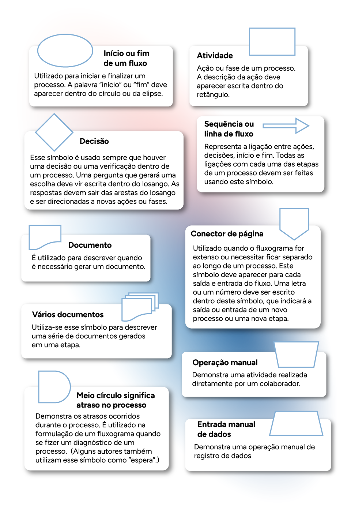
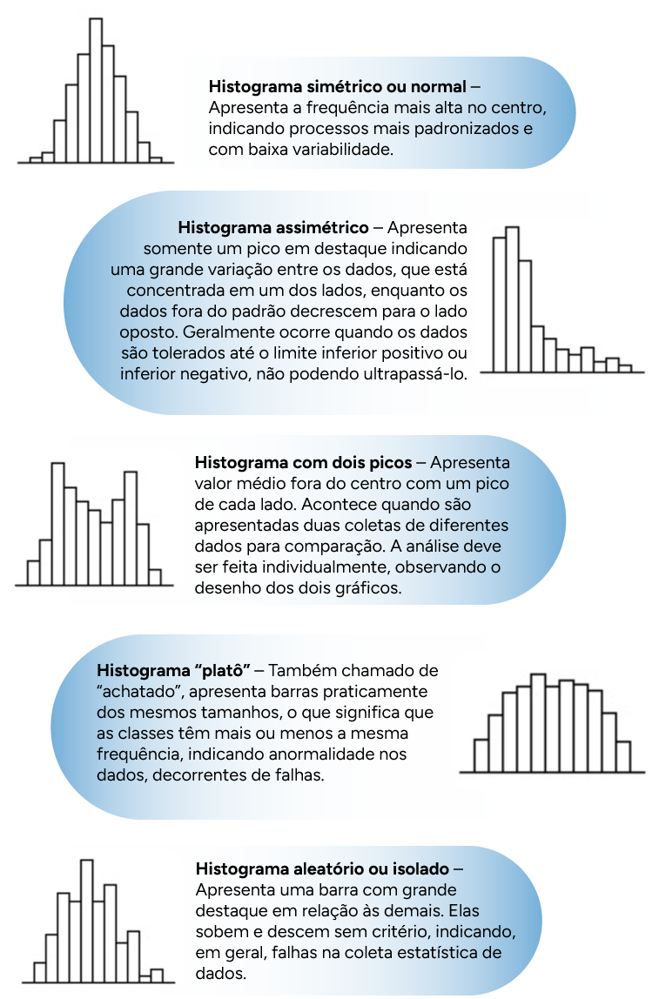

Ferramentas da qualidade: conceito, características e aplicação de brainstorming; fluxograma; matriz GUT (gravidade, urgência e tendência); diagrama de causa e efeito ou espinha de peixe; folha de verificação; diagrama de Pareto; histograma; diagrama de dispersão; cartas de controle; 5W2H; técnica dos 5 porquês
As ferramentas da qualidade são recursos indispensáveis para organizações que buscam a excelência operacional. Nesse contexto, as ferramentas apresentadas neste conhecimento desempenham papéis fundamentais. Elas oferecem uma estrutura sólida para identificar, analisar e resolver problemas, além de facilitar a tomada de decisões baseadas em dados.
Neste conhecimento, você entenderá o conceito, as características e as aplicações de cada uma dessas ferramentas e desenvolverá as habilidades necessárias para impulsionar a melhoria contínua e alcançar os mais altos padrões de qualidade nas operações organizacionais.
Inicie descobrindo como as ferramentas da qualidade podem elevar o desempenho e a eficiência das organizações.

Finalidade
Conforme um dos preceitos de Deming, uma organização deve aprimorar seu sistema de produção e prestação de serviços visando elevar a qualidade, aumentar a produtividade e, por conseguinte, reduzir os custos de maneira sistemática (Landiva, 2021). De acordo com essa filosofia, é crucial realizar verificações periódicas desses processos. Essa responsabilidade é uma das funções primordiais das ferramentas da qualidade, as quais têm como propósito fornecer novas ideias, apresentar novas abordagens e diagnosticar problemas e suas origens.
Essas ferramentas desempenham essa função ao organizar dados e informações em gráficos, tabelas e fluxogramas. Por meio delas, as informações são coletadas e os dados são processados e agrupados para facilitar a leitura e a interpretação. Essas informações constituem a base para orientar as decisões e direcionar os caminhos da organização.
Para que a aplicação das ferramentas tenha o maior aproveitamento, é necessário observar alguns pontos de atenção, tais como:
- Clareza dos objetivos
- Objetividade
- Trabalho em equipe
- Boa comunicação
- Envolvimento de diferentes áreas
- Positividade frente às dificuldades, bem como mente aberta a mudanças
Tipos de ferramentas
As ferramentas da qualidade podem ser classificadas em brainstorming, fluxograma, matriz GUT, diagrama Ishikawa ou espinha de peixe, folha de verificação, diagrama de Pareto, histograma, diagrama de dispersão, cartas de controle, 5W2H e técnica dos 5 porquês. Confira cada uma dessas ferramentas em detalhe.
Brainstorming
O que é
Brainstorming é o termo derivado de duas palavras de língua inglesa: brain, que significa “cérebro”, e storm, que significa “tempestade”. Portanto, brainstorming é o ato de gerar uma tempestade de ideias no cérebro. Essa técnica para a solução de problemas foi criada por Alex F. Osborn, em 1938. Alex era proprietário de uma importante agência de publicidade norte-americana, e talvez seja por isso que, no Brasil, os publicitários foram os primeiros a utilizar a ferramenta. O objetivo do brainstorming é criar e explorar a capacidade criativa das pessoas, com o intuito de gerar muitas ideias em um curto espaço de tempo. Segundo Toleto e Aires (2013, p. 208), “essa técnica pretende potencializar a criatividade de todas as pessoas que participam para que expressem, sem temor e de modo espontâneo, sem censura nem crítica, todas as ideias que vão surgindo em suas mentes”.
Quando usar
É utilizado como suporte, associado a outras ferramentas da qualidade, tanto para resolver problemas quanto para propor melhorias.
Para aplicar essa ferramenta, é adequado reunir um grupo de pessoas e utilizar os pensamentos e as ideias delas para que, por meio de sugestões, seja possível chegar a um consenso para a solução de um problema ou a aplicação de uma melhoria.
Como aplicar
Segundo Rodrigues (2020), as seguintes etapas são recomendadas para a aplicação do brainstorming:
- É preciso convocar a equipe envolvida na solução.
- Deve-se estabelecer o objetivo e comunicar esse objetivo de forma clara aos envolvidos.
- Indica-se um líder para dirigir a equipe e garantir a realização das etapas, definindo um membro da equipe que seja responsável por fazer o registro das ideias.
- Define-se um tempo para a geração de ideias (sugestão de 10 minutos), a fim de que os participantes façam anotações individuais sobre o tema.
- Compartilha-se as sugestões de cada participante com o grande grupo apenas quando chegar a vez dele. Todas as sugestões são coletadas e anotadas e nenhuma ideia pode ser criticada ou rejeitada.
- Deve-se fazer uma análise crítica das ideias sugeridas juntamente com o grupo. As ideias duplicadas devem ser eliminadas e, depois, o líder seleciona aquelas que podem ser a causa do problema ou as melhores sugestões, no caso de o objetivo da aplicação do brainstorming ser a implantação de uma melhoria.
- No caso de a aplicação do brainstorming destinar-se à busca da causa de um problema, eliminar uma ideia sem investigá-la antes com mais profundidade não é adequado, por isso, tenha certeza da decisão de excluir uma possível causa. Se for o caso, quando necessário, deixe-a à parte e aprofunde-se posteriormente em cada situação, usando outras ferramentas da qualidade para descobrir a causa raiz.
Orientações
Nunca faça sozinho um brainstorming. Essa ferramenta funciona muito melhor quando realizada por um grupo multidisciplinar. Não descarte nenhuma hipótese citada pelos participantes e não faça julgamentos.
Considere todas as ideias levantadas pelos participantes e não as julgue. Ideias não devem ser criticadas e, quanto mais delas, melhor. Fique atento se surgirem poucas ideias, pois isso poderá levar a uma causa errada por falta de participação das pessoas.
Fluxograma
O que é
Fluxograma é uma representação gráfica na qual, por meio de símbolos padronizados, é possível descrever e promover o mapeamento de várias etapas de um processo, organizando-as em uma sequência lógica e planejada. O uso dessa ferramenta permite visualizar origem, processo e destino dos dados e das informações que compõem o fluxo de uma atividade, possibilitando o perfeito entendimento dos caminhos percorridos por um processo.
Cada símbolo demonstra uma ação diferente a ser tomada, seja no sentido de avançar no processo, seja no de esperar, decidir, arquivar ou inserir dados manualmente, entre vários outros. Cada símbolo em um fluxograma tem um significado:
Fonte: Senac EAD (2024)
Compreender a codificação por trás do fluxograma é fundamental para identificar os pontos nos quais há decisões a serem tomadas, dados a serem utilizados ou arquivados, intervalos de tempo entre as tarefas, controle de produtividade, confiabilidade ou capacidade de um processo, além de identificar duplicidades e tarefas que não agregam valor ao processo. Essa abordagem torna as informações mais claras e padronizadas, aprimorando a comunicação entre as partes envolvidas, o que por sua vez aumenta a produtividade e reduz retrabalhos e custos de operação.
Quando usar
Os fluxogramas podem ser utilizados para traçar, de maneira inteligente, desde as tarefas mais simples, envolvendo apenas um indivíduo, até as tarefas mais elaboradas, que envolvam diversas áreas e tomadas de decisões. Seu uso se aplica na realização e organização sequencial de etapas de processos de uma empresa e compreensão de seu funcionamento. Os fluxogramas podem ser utilizados na criação e no desenvolvimento de novos processos, na revisão de processos já existentes como forma de aumentar produtividade e otimizar atividades, bem como na elaboração de processos novos.
Como aplicar
As etapas para elaboração de um fluxograma são:
- Definir qual processo será desenhado
- Reunir em grupo as pessoas envolvidas nas atividades do processo
- Elaborar a construção do fluxograma atual detalhando minuciosamente, em suas etapas, atividades, produtos ou serviços, em caso de criação de fluxos novos
- Verificar as alterações que necessitam ser realizadas, em caso de uso de fluxogramas para melhorar processos
- Reconstruir o fluxograma com as melhorias e validar com os processos envolvidos
Um exemplo muito comum do dia a dia, que serve para a compreensão da melhor aplicação de fluxogramas, é o preparo de um café. Na imagem a seguir, é possível identificar, de forma mais visível, todas as etapas, sequências e paradas dessa atividade:
Fonte: Senac EAD (2024)
Fluxograma com as etapas do processo de se fazer um café usando os símbolos-padrão de acordo com cada significado. Dentro de cada símbolo está descrita a etapa do processo. Cada símbolo é ligado com outro por meio de um conector/seta. O início do fluxo se dá com o desenho de uma elipse, em que há a palavra “início”. Ela conecta-se ao retângulo em que está escrito “separar os materiais necessários”. Na sequência, há um losango e, dentro dele, a pergunta “encontrou todos os itens?”. Deste losango partem duas setas: uma delas direciona para opção “não”, que remete a um novo retângulo com a palavra “comprar” e se liga por uma seta que sobe para o retângulo “separar os materiais necessários”; e a outra seta liga o losango à opção “sim”, que dá sequência ao fluxo e à próxima etapa. Nessa próxima etapa está um retângulo que contém a frase “colocar 350 ml de água para ferver”, e que se liga ao próximo retângulo, que é “montar o filtro no suporte e colocar duas colheres de pó de café”. Este retângulo liga-se a outro, em que consta a frase “colocar a água para ‘passar’ no filtro”. Na sequência, um losango aparece com a pergunta “terminou a água?”. Uma seta direciona para opção “não” e, na sequência, sobe para o retângulo “colocar a água para “passar” no filtro”. Há também a opção “sim”, sequenciando o processo com uma seta conectando ao próximo retângulo, descrito como “transferir o café para garrafa térmica”, e depois há outra seta levando ao último retângulo, com a escrita “lavar todos os utensílios e guardar”. O fluxo termina com uma elipse, que contém a palavra “fim”.
Como foi possível observar, a criação de fluxogramas desempenha um papel fundamental ao organizar e sequenciar atividades. Isso evita que etapas sejam executadas fora de ordem, garantindo o cumprimento de requisitos importantes, como a correta sequência para fazer café, ou mesmo a realização de tarefas simultâneas, como colocar água para ferver e montar o filtro ao mesmo tempo.
Além disso, os fluxogramas ajudam na identificação de duplicidades, conflitos e de muitos problemas nos processos.
Eles também permitem que se corrijam situações em que uma tarefa, realizada por diferentes pessoas, precisa ser executada de maneira uniforme, seguindo sempre o mesmo fluxo de etapas sequenciais. Essa abordagem contribui significativamente para a padronização e eficiência dos processos.
Orientações
A construção dos fluxograma precisa ser elaborada em grupos, por pessoas que conheçam o processo, e validada com especialistas e responsáveis de outros processos. Deve representar sempre a realidade atual praticada e não situações ideais ou pressuposições. Todo fluxograma precisa ter um início e um fim. Uma atividade precisa sempre ser ligada a outra ou a um fim. Não necessariamente todos os exemplos de símbolos citados precisam ser usados em um fluxograma. Em cada situação devem ser avaliados os símbolos adequados e a sua aplicação dentro do sequenciamento. Você aprofundará o seu conhecimento sobre fluxogramas na unidade curricular que trata de mapeamento de processos.
Matriz GUT
O que é
A matriz GUT é uma ferramenta da qualidade utilizada para a priorização de tomadas de decisões. Por esse motivo, ela também é conhecida como matriz de prioridades. O termo GUT, na verdade é um acrônimo que faz referência a:
G = Gravidade
U = Urgência
T = Tendência
Quando usar
No ambiente organizacional, as pessoas frequentemente se deparam com diversas situações que exigem uma decisão e priorização do que deve ser abordado primeiro. É aqui que entra em cena a matriz GUT.
O uso da matriz GUT é crucial para que uma organização avalie a eficácia de suas ações e determine onde concentrar seus esforços e recursos. Ao priorizar o que precisa ser tratado, a empresa ganha uma visão mais clara de quais atividades devem ser realizadas primeiro, garantindo que as mais importantes sejam executadas no momento certo.
Como aplicar
Para aplicar a matriz GUT, é necessário construir uma tabela com a lista dos itens (problemas, riscos, não conformidades etc.) dos quais se deseja considerar e avaliar a gravidade, urgência e tendência. Confira:
G (gravidade)
Refere-se à gravidade que o problema representa no contexto de uma determinada empresa em um momento específico.
U (urgência)
Refere-se à urgência com que a solução de um problema se faz necessária.
T (tendência)
Essa variável responde à seguinte questão: “caso não se tome nenhuma ação sobre o problema, qual é a tendência de ele piorar o desempenho dos processos ou de permanecer inalterado ao passar do tempo?”, ou seja, caso nada seja feito, a tendência do problema é piorar ou permanecer inalterado?
A cada situação identificada ou aspecto listado atribui-se um valor, em uma escala de pesos definida com notas de 1 a 5, a fim de serem estabelecidas as prioridades para sua abordagem.
A matriz GUT é uma ferramenta que deve ser aplicada em grupo. Recomenda-se que o grupo tenha no máximo 15 pessoas e as notas devem ser atribuídas sob consenso dos participantes.
Por fim, é preciso multiplicar as notas de cada aspecto (G x U x T) e, em seguida, ordenar os itens de forma crescente. Como resultado, uma lista priorizada desses itens será gerada.
A tabela a seguir apresenta um exemplo de um parâmetro predefinido que você poderá utilizar, mas é necessário avaliar sempre os critérios com a sua equipe de trabalho:
| Nota | Gravidade | Urgência | Tendência |
| 5 | Gravíssimo | Imediata | Piorará imediatamente |
| 4 | Muito grave | Com alguma urgência | Piorará em pouco tempo |
| 3 | Grave | O mais cedo possível | Piorará a médio prazo |
| 2 | Pouco grave | Pode esperar um pouco | Piorará a longo prazo |
| 1 | Sem gravidade | Não tem pressa | Não vai piorar/melhorar |
Fonte: Senac EAD (2024)
Segundo Rodrigues (2020), para construir uma matriz de prioridades devem ser seguidos os seguintes passos:
- Identificar os problemas ou as não conformidades que participarão da matriz.
- Definir e conceituar os critérios para avaliação diante da especificidade do processo.
- Estipular a escala a ser utilizada para atribuir pesos aos critérios.
- Construir a matriz.
- Multiplicar todos os pesos atribuídos a cada um dos critérios diante de cada problema ou não conformidade.
- Por fim, aquele que apresentar maior valor será o problema prioritário (para facilitar, você poderá ordenar a última coluna do maior para menor).
Considere este exemplo:
Imagine uma empresa que oferece serviços de limpeza e conservação de edifícios. Recentemente, ela tem enfrentado alguns problemas em seus processos de gestão e na entrega dos serviços aos clientes. As reclamações estão aumentando, principalmente relacionadas à qualidade dos serviços prestados, à demora na realização das tarefas e à má apresentação dos funcionários durante o trabalho. Para lidar com essa situação, os gestores decidiram reunir a equipe e discutir as principais reclamações dos clientes. Eles optaram por usar uma ferramenta chamada GUT.
Primeiro, o líder da equipe elaborou uma tabela listando os problemas identificados. Em seguida, todos participaram de uma discussão em grupo para determinar o impacto de cada problema e chegar a um consenso da sua prioridade. Ficou acordado o uso de uma escala de 1 a 5, em que, quanto maior for a nota, maior será a importância do problema. Depois de entenderem bem o contexto, os participantes coletaram as informações necessárias e montaram a matriz GUT, resultando na seguinte tabela.
| Nº | Problema | G | U | T | G x U x T |
| 1 | Uniformes sujos e rasgados | 5 | 4 | 2 | 40 |
| 2 | Demora na execução das atividades | 3 | 5 | 3 | 45 |
| 3 | Falta de materiais e equipamentos para a execução das atividades | 3 | 5 | 4 | 60 |
| 4 | Desperdício excessivo de material de limpeza | 2 | 3 | 1 | 6 |
| 5 | Excesso de rotatividade entre os colaboradores | 3 | 3 | 2 | 18 |
| 6 | Estoque de materiais inadequado gerando atrasos na entrega para os colaboradores | 4 | 2 | 4 | 32 |
| 7 | Muitos gastos com transporte, pois os colaboradores dividem seu tempo entre dois ou mais clientes | 2 | 1 | 2 | 4 |
| 8 | Excesso de absenteísmo (faltas) entre os colaboradores | 4 | 5 | 5 | 100 |
| 9 | Uso de produtos inadequados para a limpeza das instalações dos clientes | 4 | 3 | 1 | 12 |
Fonte: Senac EAD (2024)
Segundo o cenário apresentado, o grupo identificou que o problema prioritário a ser tratado é o item 8: excesso de absenteísmo entre os colaboradores, pois isso tem desencadeado uma série de outros problemas. Essa conclusão foi alcançada porque, entre todos os problemas listados, este foi o que obteve a pontuação mais alta na matriz GUT, totalizando 100 (G x U x T). Em segundo lugar ficou o item 3: falta de materiais e equipamentos para a execução das atividades, com uma pontuação de 60, e assim por diante. É importante ressaltar que os problemas com notas mais baixas não serão ignorados, mas sim abordados posteriormente, após serem tratados aqueles problemas que obtiveram as pontuações mais altas na matriz.
É fundamental entender que ter uma lista auxilia na priorização dos problemas, mas não os resolve por si só. Ela é apenas um ponto de partida, uma direção que indica onde começar. Por isso, após priorizar a lista de problemas com a GUT, é crucial utilizar uma ferramenta que investigue as causas raízes dos problemas. Nesse sentido, o diagrama de Ishikawa (espinha de peixe) é uma excelente opção para ser utilizada em conjunto com a GUT. Em seguida, pode-se empregar o método 5W2H para organizar as ações e elaborar um plano de ação abrangente.
Orientações
A matriz GUT deve ser aplicada em grupo. Uma escala com critérios deve ser alinhada entre os participantes do grupo antes da aplicação da GUT e esses critérios devem ser relembrados sempre que for aplicada a GUT. Priorizar não é resolver o problema, por isso, é necessário usar ferramenta de análise de causa associada, para que a raiz do problema seja encontrada e o problema seja solucionado.
Diagrama de Ishikawa ou espinha de peixe
O que é
O diagrama de Ishikawa, também conhecido como “espinha de peixe” ou “diagrama de causa e efeito”, foi desenvolvido por Ishikawa, em 1943, na Universidade de Tóquio. Seu objetivo era afirmar a interligação existente entre os diversos fatores de um processo, demonstrando a relação entre um efeito que se pretende estudar e todas as possibilidades que podem estar relacionadas à sua ocorrência, atuando como um guia para a identificação da causa fundamental de um problema e a determinação das medidas corretivas adotadas para a solução dele.
Amplamente utilizado e difundido no mundo inteiro, e fazendo parte de um conjunto de ferramentas criadas por Ishikawa, o diagrama é muito utilizado associado com outras ferramentas da qualidade, principalmente o brainstorming, visto anteriormente.
Quando usar
O diagrama de Ishikawa é uma representação visual que destaca as causas de um problema específico e que se assemelha a um esqueleto de peixe, o que lhe confere também o nome de "diagrama de espinha de peixe". Em seguida será apresentada a estrutura comumente adotada pelas organizações ao usar essa ferramenta. O problema, ou efeito indesejado, é descrito na cabeça do peixe, enquanto as possíveis causas são representadas ao longo de suas vértebras.
Existem diversas categorias de causas para cada efeito, sendo as seis principais agrupadas nos 6 Ms:
- Medida
- Método
- Mão de obra
- Máquina
- Meio ambiente
- Material
É importante notar que essas categorias podem variar conforme o tipo, segmento e contexto da organização, não sendo, portanto, fixas.
Confira a seguir um exemplo prático da aplicação do diagrama de Ishikawa, no qual o problema recorrente de falta de etiquetas de preços em produtos de um supermercado é analisado e categorizado.
Imagem semelhante ao esqueleto de um peixe, em cuja cabeça está descrito o problema: “falta a informação ao consumidor sobre o preço de produtos do supermercado”. Nas vértebras estão distribuídas as possíveis causas em cada um dos 6 Ms. Na medida está “falta de procedimento/instruções”; no método estão “falta delegar pessoas para realizarem esta atividade” e “não há controle das etiquetas no estoque”; em mão de obra estão “esquecimento” e “falta treinamento aos colaboradores”. Nas vértebras que estão abaixo constam, em máquina: “quebra da máquina de impressão de etiquetas” e “falha no sistema software do mercado”; em ambiente: “falta de espaço para fixar as etiquetas na prateleira” e “consumidor está removendo as etiquetas (mal-intencionado)”; em material: “falta da tinta da impressora” e “falta da etiqueta”.
Ao utilizar a ferramenta, você classifica e distribui as possíveis causas em cada um dos 6 Ms (vértebras).
Medida
Refere-se às métricas utilizadas para medir, controlar e monitorar os processos.
Método
Refere-se aos procedimentos e métodos adotados pela organização durante as atividades, ou seja, para execução de atividades.
Mão de obra
Refere-se aos colaboradores na execução das atividades, com situações relacionadas a treinamento, competência, conduta e disponibilidade.
Máquina
Refere-se a falhas de máquinas e equipamentos, que podem ser causadas pela falta de manutenção ou utilização incorreta. Aqui se indica tudo o que for relacionado ao funcionamento dos equipamentos, das máquinas e dos sistemas.
Meio ambiente
Refere-se às possíveis causas relacionadas aos ambientes interno (espaços, leiaute e ruído) e externo (poluição e instabilidade do tempo).
Materiais
Refere-se ao uso de materiais e/ou matéria-prima, seja fora das especificações, seja com quantidade incorreta, por exemplo.
Como aplicar
Você pode elaborar o diagrama de Ishikawa seguindo estes passos:
- Promova a participação das pessoas envolvidas no processo.
- Defina detalhadamente o problema que foi selecionado (onde ocorre, quando ocorre e sua extensão).
- Para identificar as possíveis causas, promova a associação com a ferramenta brainstorming, levantando assim dados/causas a serem estudados que podem auxiliar você na identificação daquele que está causando o problema.
- Construa o diagrama inserindo o problema na cabeça do peixe e preencha as categorias (6 Ms) inserindo as possíveis causas identificadas no brainstorming. As causas identificadas pela equipe precisam ser classificadas em cada uma das categorias dos 6 Ms. Lembre-se de não é obrigatório o preenchimento de todos os 6Ms.
- Conforme o grau de complexidade das causas identificadas, podem ser geradas avaliações mais profundas chamadas “causas secundárias” ou, ainda, “causas de segundo nível”. Se necessário e adequado, deve-se escrever as causas secundárias em ramificações da espinha principal. É possível que o processo continue se ramificando, descendo a níveis ainda mais inferiores até que se encontrem todas as causas mais prováveis, mas o critério de profundidade é decidido pelo grupo do estudo.
- Analise a consistência do diagrama, avaliando se foram identificadas todas as possíveis causas, e coloque em discussão juntamente com os participantes o impacto que cada possível causa pode ter no processo em questão.
- Interprete as causas descritas. Segundo Carpinetti (2016, p. 84), “o grau de importância de cada causa relacionada no diagrama deve ser estabelecido não somente com base na experiência e em impressões subjetivas, que muitas vezes podem ser enganadoras, mas também com base em dados”. Por isso, as causas listadas precisam ser investigadas, uma a uma, e devem ser eliminadas aquelas que não são responsáveis pela ocorrência do problema. Observe as causas que aparecem repetidamente, investigando cada situação e garantindo que a real causa seja encontrada.
- Por fim, selecione a(s) causa(s) provável(eis) e, para esta(s), realize um plano de ação usando uma ferramenta complementar que contribuirá para que o problema não volte a ocorrer. Uma sugestão é o 5W2H, uma importante ferramenta que será demonstrada ainda neste conhecimento.
Para aprender mais, que tal exercitar seus conhecimentos de forma criativa e divertida?
Orientações
Faça a construção do diagrama de Ishikawa sempre em grupo, envolvendo pessoas que conheçam o processo e estejam envolvidas com o problema. Use-o sempre associado a outras ferramentas da qualidade para aprofundar a solução proposta e viabilizar o uso adequado da ferramenta. Use palavras simples e claras na identificação das possíveis causas. Reforce sempre, entre os presentes, a diferença entre causa e efeito, pois muitas pessoas confundem esses conceitos e, se isso ocorrer, a aplicação da ferramenta torna-se inadequada e há grandes chances de o problema voltar a aparecer.
Folha de verificação
O que é
A folha de verificação é uma ferramenta usada para tabular dados de uma observação e identificar a frequência das ocorrências selecionadas em um período (tempo) determinado. É uma ferramenta bastante utilizada na gestão da qualidade, de uso simples e de fácil aplicação e entendimento.
Quando usar
O uso da folha de verificação é bem amplo. Ela pode ser aplicada para analisar o andamento de atividades – como a coleta de dados para acompanhamento de processos –, comparar se processos estão seguindo parâmetros definidos previamente e coletar dados que comprovem as causas do defeito de peças, por exemplo. Utiliza-se essa ferramenta quando se deseja obter informações para auxiliar as melhores decisões gerenciais, pois a base dela é realizada pela coleta de dados, que são processados e analisados, fornecendo assim informações consistentes e reais para a gestão da organização.
Como aplicar
A elaboração da folha de verificação é possível com a criação de um formulário, no qual, por meio de coletas de dados, as informações são compiladas. Essa compilação gera um histórico de informações, que permite a verificação de comportamentos e tendências, possibilitando a implementação de ações corretivas para a melhoria dos processos. Não existe um modelo padrão para a elaboração do formulário.
Você pode elaborar a folha de verificação com os seguintes passos:
- Defina o que será medido.
- Determine o objetivo da coleta de dados e o motivo do estudo (justificativa).
- Elabore o formulário/planilha que contenha os campos necessários para efetuar os registros (se adequado, crie instruções para o preenchimento, assim ficará mais fácil para o responsável que coletará os dados).
- Defina a unidade de medida dos dados coletados, por exemplo: dias, horas, centímetros, metros, litros, unitário, reais etc.
- Informe o responsável sobre a importância de realizar uma correta coleta de dados e ofereça as orientações necessárias.
- Colete os dados de forma clara e correta e registre-os no formulário.
- Analise as informações registradas na folha de verificação.
- Por fim, classifique, ordene e avalie a possibilidade de construir gráficos para melhorar sua análise e interpretação.
A tabela a seguir apresenta um exemplo de folha de verificação, no qual se tem um acompanhamento realizado para levantar dados a respeito da quantidade de reclamações feitas por clientes de um restaurante ao longo de uma semana.
| Restaurante Vida e Sabor | Objetivo: coletar reclamações de clientes no término das refeições | Motivo: aumentar a satisfação | Responsável pela coleta de dados: João da Silva | Datas da coleta: semana 3 de 2023 | Total de reclamações: 50 | |||
| Tipos de reclamações | ||||||||
|---|---|---|---|---|---|---|---|---|
| Ocorrências | ||||||||
| Dia 1 | Dia 2 | Dia 3 | Dia 4 | Dia 5 | Dia 6 | Dia 7 | Total | |
| Demora no atendimento | 4 | 3 | 4 | 2 | 4 | 2 | 1 | 20 |
| Pedidos errados | 3 | 2 | 1 | 2 | 1 | 1 | 2 | 12 |
| Falta de cordialidade no atendimento | 1 | 2 | 0 | 1 | 3 | 0 | 1 | 8 |
| Utensílios sujos | 0 | 1 | 1 | 2 | 2 | 1 | 0 | 7 |
| Cobrança indevida | 0 | 1 | 1 | 1 | 0 | 0 | 0 | 3 |
Fonte: Senac EAD (2024)
O gráfico com as informações coletadas demonstra que a maior reclamação é referente à demora no atendimento, pois em todos os dias os clientes indicaram sua insatisfação.
Fonte: Senac EAD (2024)
Gráfico de barras demonstrando a coleta de dados realizada dos dias 1 a 7. A demora no atendimento é o tipo de ocorrência que apresenta maior número em todos os dias, totalizando 20 reclamações ao final dos 7 dias, evidenciando que esse é um ponto de atenção a ser tratado pelo restaurante. O gráfico apresenta picos de até 4 reclamações desse tipo nos dias 1, 3 e 5.
Orientações
É adequado um momento de planejamento para construção do formulário, a fim de que este contemple todos os dados necessários no estudo.
O resultado das informações coletadas deve ser interpretado por pessoas responsáveis e capacitadas. O responsável pela coleta de dados precisa ter consciência da relevância que as suas informações gerarão no processo e, por isso, todo o cuidado na coleta é importante.
Diagrama de Pareto
O que é
O diagrama de Pareto é muito utilizado nas empresas, sendo um importante instrumento para definir prioridade de atividades.
A ideia básica dessa ferramenta surgiu a partir do princípio de Pareto, criado por Vilfredo Pareto, economista italiano que viveu no século XIX (1843-1923). Pareto desenvolveu um estudo sobre desigualdade na distribuição de riquezas, cuja conclusão era a de que 20% da população detinha 80% das riquezas produzidas. Com a contribuição de Joseph Juran, o princípio de Pareto transformou-se em uma das ferramentas da qualidade, possibilitando o estudo e a descoberta das ocorrências mais relevantes e, por isso, indicando quais devem ter a tratativa priorizada.
O diagrama de Pareto, também conhecido como regra 80/20, afirma que a maior parte dos problemas ocorridos nas empresas é decorrente de um pequeno número de causas, que, se identificadas e corrigidas, eliminam a ocorrência de defeitos ou falhas. Isso significa que, se 80% dos problemas são ocasionados por 20% das causas, logo, solucionando os 20%, a maior parte dos problemas acaba sendo resolvida (80%).
Uma excelente base para a construção dos dados do diagrama de Pareto é a folha de verificação, em que são inseridos os problemas encontrados e a frequência com que ocorrem.
Quando usar
O diagrama de Pareto pode auxiliar uma empresa a gerenciar seus recursos de uma forma muito adequada, pois essa ferramenta é usada para identificar quais são os fatores, os problemas ou as situações diversas mais significativas, consideradas de maior ocorrência, identificando assim em quais desses aspectos a organização precisa focar seus esforços para aumentar e melhorar significativamente seus resultados com prioridade.
Como aplicar
Para construir o diagrama de Pareto, é preciso seguir os seguintes passos:
- Determine o problema ou efeito a ser estudado.
- Pesquise os fatores ou as causas que provocam o problema e colete os dados referentes a eles (lembre-se de que você pode usar uma lista de verificação).
- Construa uma tabela com quatro colunas: a primeira para “ocorrências”, a segunda para “frequência”, a terceira para “% individual” e a quarta para “% acumulado”.
- Na coluna das ocorrências, inclua o tipo da ocorrência realizada.
- Na segunda coluna, inclua o número de vezes em que cada ocorrência apareceu. Lembre-se de antes ordenar as informações de forma decrescente, ou seja, do maior para o menor.
- Preencha a coluna “% individual” dividindo a ocorrência de cada linha pelo número total de ocorrências.
- Para encontrar o “% acumulado”, some o percentual de cada ocorrência ao percentual da ocorrência da razão anterior.
- Analise o diagrama identificando quais fatores são mais recorrentes e, assim, identificando aqueles que devem ser priorizados.
A representação gráfica de um diagrama de Pareto se dá por meio de um gráfico de barras, que classifica os dados de um problema por ordem de importância (advindos da lista de verificação), e linhas, que representa a porcentagem acumulada da frequência das ocorrências. Observe um exemplo de aplicação de diagrama de Pareto que analisa os tipos de reclamação de clientes do restaurante Vida e Sabor.
Fonte: Senac EAD (2024)
Diagrama de Pareto mostrando as ocorrências de forma crescente em barras e o valor acumulado dessas ocorrências em uma linha. O diagrama mostra que os três maiores problemas que acumulam os 80% do gráfico são: demora no atendimento (40%), pedidos errados (64%) e falta de cordialidade no atendimento (80%). Sendo priorizadas essas ocorrências e tratadas suas causas, existe uma tendência à redução das reclamações de clientes.
Para aprofundar seu conhecimento no uso do diagrama de Pareto, confira no vídeo a seguir um passo a passo da construção dessa ferramenta em Excel.
Orientações
Utilize o diagrama de Pareto sempre que precisar examinar a frequência das ocorrências, como reclamações de clientes, não conformidades ou defeitos, para identificar aquelas que são mais impactantes. Recorra a essa ferramenta também quando for necessário analisar as causas específicas dos problemas, desmembrando os dados do processo, ou quando houver uma relação entre as ocorrências em um contexto específico. Ao elaborar uma lista de tipos de ocorrência, evite criar uma categoria genérica como "outros", que represente uma grande porcentagem. Nesse caso, é preferível utilizar um método de classificação diferente e detalhar cada tipo de ocorrência separadamente. Se um problema pode ser resolvido facilmente, mesmo que seja de menor importância, deve ser abordado imediatamente.
Histograma
O que é
Histograma é uma ferramenta da qualidade, de representação gráfica, que tem como função organizar dados divididos em classes. Ele pode ser utilizado tanto para a identificação e priorização de problemas quanto para a verificação de resultados. É uma ferramenta que permite tirar conclusões imediatas da distribuição de valores (dispersão) e de quantas vezes um determinado valor ou grupo de valores ocorre (frequência), determinando como uma amostra de dados ou população está distribuída, de modo a facilitar a visualização da distribuição dos dados.
Entendidos o conceito e a aplicação de histograma, é possível que você se questione sobre as diferenças entre ele e o gráfico de barras.
Muitas pessoas confundem essas duas formas de representação. Ao contrário do histograma, o gráfico de barras mede uma certa informação e não um grupo de dados. Usualmente, ele representa dados que podem ser divididos em categorias distintas.
Por exemplo, imagine que, ao analisar os dados de uma pesquisa de satisfação da empresa fictícia Sonho Doce, 50 clientes foram convidados a avaliar os serviços, atribuindo notas em uma escala de 1 a 5. Os resultados detalhados ficam desta forma:
| 5 | 4 | 2 | 1 | 2 |
| 4 | 4 | 3 | 1 | 4 |
| 3 | 4 | 2 | 5 | 3 |
| 2 | 4 | 2 | 5 | 3 |
| 3 | 3 | 3 | 1 | 2 |
| 3 | 3 | 2 | 3 | 3 |
| 4 | 4 | 3 | 1 | 2 |
| 5 | 1 | 3 | 3 | 4 |
| 3 | 4 | 2 | 4 | 3 |
| 2 | 3 | 3 | 3 | 3 |
Fonte: Senac EAD (2024)
Apenas observando as informações compiladas nessa tabela é difícil saber qual é a percepção dos clientes quanto ao serviço realizado. Porém, com o gráfico de barras a seguir, é possível visualizar graficamente quantas vezes cada nota foi dada, permitindo ao gestor da Sonho Doce identificar o grau de satisfação de seus clientes.
Fonte: Senac EAD (2024)
Gráfico que mostra o somatório das ocorrências em barras, informando o número de vezes que cada nota foi dada pelos clientes. No gráfico, 20 clientes, dos 50 que responderam à pesquisa, consideram a satisfação como nota 3, representando a maior incidência da satisfação, seguida das notas 2, com 10 votantes, e 4, com 11 votantes.
O gráfico de barras identificou que existe uma concentração muito mais alta das notas 3 da pesquisa de satisfação. Com isso, pode-se concluir que grande parte dos clientes concorda que o serviço prestado não está sendo muito satisfatório, por isso houve um resultado mais negativo do que positivo. Dessa forma, são necessárias ações da empresa Sonho Doce para melhorar aquele índice.
Quando usar cada uma das ferramentas
Confira as melhores situações de uso para o gráfico de barras e o histograma:
Gráfico de barras
Use um gráfico de barras quando estiver lidando com dados numéricos, representados por números inteiros, não negativos, ou seja, dados que podem ser classificados em categorias distintas. Ele é ótimo para comparar quantidades entre diferentes categorias.
Histograma
Use um histograma quando estiver lidando com dados numéricos contínuos (“números quebrados”) e quiser entender a distribuição desses dados. Essa ferramenta é útil para identificar padrões e tendências nos seus dados.
Analisar dados pode se tornar uma tarefa desafiadora, especialmente diante de uma grande quantidade de informações. O uso do histograma é amplamente aceito e apropriado, principalmente quando se lida com volumes extensos de dados, como variáveis quantitativas (gramatura, largura, comprimento, temperatura, entre outras grandezas). Essas informações podem ser coletadas em situações cotidianas de trabalho, e, com o histograma, é possível compreender a distribuição dos dados.
O histograma facilita a identificação de forma, ponto central, variação da distribuição, amplitude, média, desvio padrão, entre outros parâmetros, auxiliando na identificação de ajustes necessários nos processos.
Quando os dados são representados no histograma, o gráfico pode adotar diversos formatos, como exemplificado no seguinte quadro.
Fonte: Senac EAD (2024)
Como aplicar
Para construir um histograma, é preciso seguir estes passos:
- Colete dados.
- Organize os valores em uma tabela.
- Identifique os valores de máximo e mínimo encontrados.
- Defina o número de classes.
- Calcule a amplitude da amostra.
- Determine o intervalo e a frequência de cada valor ou classe.
- Desenhe o histograma.
- Ao usar um histograma, você deve considerar variáveis quantitativas, ou seja, números resultantes de contagens ou medições.
Além disso, o histograma pode ser aplicado a dados mais complexos, que envolvem variáveis quantitativas contínuas, como gramatura, largura, comprimento, temperatura etc.
Considere este exemplo prático: uma empresa precisa avaliar o peso de seus produtos durante o processo de produção. Para isso, os produtos foram monitorados em gramas ao passarem pela esteira de pesagem. Foram analisadas 60 unidades e os dados estão apresentados nesta tabela:
| 70,25 | 75,49 | 67,25 | 73,24 | 68,73 | 77,54 | 75,54 | 74,69 | 77,02 | 72,65 |
| 72,59 | 77,25 | 78,24 | 73,87 | 75,25 | 79,86 | 78,62 | 77,25 | 73,54 | 75,48 |
| 77 | 71,28 | 67,28 | 72,6 | 75,39 | 71,54 | 69,54 | 69,25 | 65,88 | 66,58 |
| 71,25 | 70,41 | 72,18 | 73,25 | 67,28 | 71,04 | 72,36 | 71,68 | 71,64 | 72,41 |
| 70,84 | 75,26 | 71,26 | 73,24 | 70,25 | 71,58 | 75,48 | 71,64 | 71,54 | 72,58 |
| 65,27 | 67,18 | 70,01 | 69,59 | 72,24 | 71,05 | 70,58 | 71,21 | 66,55 | 73,25 |
| Média | 72,25 |
Fonte: Senac EAD (2024)
Com essas informações é possível verificar que a média de peso dos produtos foi de 72,25 gramas, mas, de acordo com os dados, há valores maiores ou menores que essa média. Agora, é preciso saber como é o comportamento desses números, como eles variam, descobrir se a variabilidade é alta, baixa, se o processo é bom ou ruim, se atende à especificação do cliente. Quando se monta o histograma com as informações da tabela, pode-se ter resposta para essas perguntas.
Fonte: Senac EAD (2024)
Gráfico de histograma que mostra o somatório das ocorrências dos pesos em barras, considerando a frequência com que cada intervalo ocorre. Com o gráfico é possível evidenciar que a concentração da variação de peso dos itens encontra-se no intervalo de 70,74 gramas a 72,57 gramas, em que a frequência da amostra apresentou 17 unidades. Conhecendo o processo e seus dados, pode-se usar as informações para a tomada de decisão correta.
Conclui-se com esse histograma que os pesos coletados dos produtos se concentram muito em torno das faixas de 70,70 g a 72,52 g. Com base nessas informações, é possível avaliar dados obtidos no processo com os critérios de aceitação do cliente e da própria produção, e definir se devem ser realizados ajustes para que o processo siga seu curso. Limites de especificação inferior e superior podem ser definidos para que controles sejam realizados e ações de correção possam ser tomadas, caso os limites sejam excedidos. Carta de controle é outra ferramenta da qualidade que apresenta esse critério e pode ser utilizada em conjunto com o histograma. Essa ferramenta será objeto de estudo ainda neste conhecimento.
Orientações
Diversos softwares possibilitam o tratamento estatístico e a criação de gráficos ou diagramas para representar a distribuição de dados, especialmente quando há um grande volume de informações. O Microsoft Excel atende à maioria dos casos do cotidiano, sendo uma ferramenta prática, de fácil manuseio e entendimento.
Para aprofundar seu conhecimento do histograma, assista ao vídeo a seguir, que contém o passo a passo da construção dessa ferramenta com o exemplo do peso dos produtos, citado anteriormente.
Diagrama de dispersão
O que é
O diagrama de dispersão, também conhecido como gráfico ou diagrama de correlação, é uma ferramenta gráfica que permite demonstrar a relação existente entre duas variáveis, quantificando a intensidade desta relação e estabelecendo associação entre as duas variáveis quantitativas, buscando uma relação de causa e efeito entre elas.
A representação gráfica é construída com um gráfico que demonstra essa correlação pela interpretação das informações dos eixos X e Y, em que a relação pode ser positiva, negativa (linha de tendência) ou, ainda, inexistente, isto é, não havendo nenhuma correlação entre as variáveis. O resultado deve ser demonstrado com pontos no cruzamento dos valores dos eixos X e Y.
Quando usar
O diagrama de dispersão é muito útil quando se deseja comparar duas variáveis e identificar o que acontece quando uma ou outra se altera. Seu uso também se aplica para avaliar se duas variáveis estão relacionadas, se há uma possível relação de causa e efeito. Por fim, essa ferramenta também auxilia a verificação da intensidade do relacionamento entre as duas variáveis, comparando assim seus efeitos, por exemplo, quanto maior for o número de pessoas de férias, maior é o congestionamento nas estradas e nos aeroportos em virtude das viagens.
Como aplicar
Os passos para montar um diagrama de dispersão são:
- Selecione as variáveis de causa e efeito cuja relação você deseja descobrir.
- Colete dados das duas variáveis para construção do gráfico (uma dica é usar as informações da ferramenta lista de verificação).
- Construa o gráfico, com os dois eixos do gráfico, colocando a variável dependente no eixo vertical e a variável independente no eixo horizontal.
- Analise as informações geradas no gráfico com base na correlação e nos tipos descritos.
Segundo Carpinetti (2016), as correlações encontradas podem ser verificadas e interpretadas nos gráficos, conforme os tipos apresentados a seguir:
Fonte: Carpinetti (2016)
Três gráficos que mostram os três diferentes tipos de correlação.
Correlação positiva (a)
Ocorre quando o aumento de uma variável leva a um aumento da outra, ou seja, o padrão de apresentação no gráfico se dá quando existe uma concentração de pontos apresentando uma linha crescente. Um exemplo disso é a relação entre o aumento da temperatura e a venda de aparelhos de ar-condicionado.
Correlação negativa (b)
Ocorre quando o aumento de uma variável leva à diminuição da outra variável, ou seja, o padrão de apresentação no gráfico se dá quando existe uma concentração de pontos em uma linha que decresce. Por exemplo, quanto mais pessoas são vacinadas contra o vírus da gripe, menor é a taxa de pessoas infectadas.
Correlação inexistente (c)
Ocorre quando a variação de uma variável não leva a uma variação sistemática da outra variável, ou seja, não existe padrão de dispersão no gráfico. Por isso, não há tendência positiva nem negativa, ou seja, as variáveis não apresentam nenhuma correlação.
Orientações
A coleta de dados das duas variáveis pode ser feita utilizando as informações da folha de verificação, e a ferramenta histograma pode contribuir com a coleta de informações para compilação dos gráficos. Ao coletar as informações, tenha certeza de que os dados estão corretos para que o resultado não seja afetado.
Cartas de controle
O que é
A carta de controle é uma ferramenta da qualidade utilizada para auxiliar no monitoramento de processos e acompanhar variabilidade de medições, permitindo assim avaliar a estabilidade de um processo. Portanto, a carta de controle é uma ferramenta que representa e mostra tendências de desempenho de processos, possibilitando seu acompanhamento e controle ao longo de um determinado tempo.
Quando usar
As cartas de controle podem ser usadas quando se necessita conhecer, monitorar e controlar os resultados de processos, identificando desvios, a partir dos limites de especificação e controles definidos, ou seja, podem ser usadas sempre que se deseja identificar se existem falhas ou melhorias que podem ser feitas em algum processo. Elas são empregadas para observar as mudanças dentro de um processo, utilizando métodos estatísticos com base em dados de amostragem e gráficos para representar tais informações.
Como aplicar
Para elaborar uma carta de controle, é necessário seguir estes passos:
- Defina os processos que serão controlados.
- Indique os responsáveis pela coleta de dados e forneça roteiro com orientações dos dados a serem coletados.
- Defina os equipamentos/instrumentos de medição e insumos que serão utilizados para avaliar o processo.
- Construa o gráfico com linha central (medições realizadas ao longo do processo) e dois limites, chamados limites de controle superior e inferior. Esses limites refletem a variação estatística e são definidos com base nos limites de especificação do produto ou de processos. A decisão sobre os limites de controle deve ser realizada pela empresa, podendo usar como critério a especificação de produtos ou dados históricos.
- Analise os dados obtidos com os responsáveis e as áreas envolvidas.
- Defina as ações para corrigir e prevenir problemas identificados no processo.
A tabela a seguir mostra o controle de monitoramento por carta de controle e a figura após apresenta o uso da ferramenta carta de controle para monitorar o desempenho de uma medição de processos. O peso esperado de um produto é de 60 gramas. Os limites foram definidos como superior de 70 g e inferior de 40 g. Para a construção do gráfico foi utilizado o Excel.
| Horas | 1 | 2 | 3 | 4 | Limite inf. | Limite sup. |
| 08:00 | 48 | 57 | 51 | 56 | 40 | 70 |
| 09:00 | 40 | 56 | 50 | 50 | 40 | 70 |
| 10:00 | 40 | 57 | 55 | 44 | 40 | 70 |
| 11:00 | 50 | 87 | 53 | 50 | 40 | 70 |
| 12:00 | 51 | 47 | 85 | 60 | 40 | 70 |
| 13:00 | 45 | 52 | 51 | 45 | 40 | 70 |
| 14:00 | 51 | 65 | 54 | 48 | 40 | 70 |
| 15:00 | 46 | 52 | 57 | 30 | 40 | 70 |
| 16:00 | 35 | 50 | 62 | 65 | 40 | 70 |
| 17:00 | 54 | 56 | 57 | 58 | 40 | 70 |
Fonte: Senac EAD (2024)
Fonte: Senac EAD (2024)
Gráfico é composto das informações de 0 até 100, de 10 em 10, organizadas de baixo para cima verticalmente na lateral esquerda. Organizadas horizontalmente na base estão os horários de 8h até 17h, de hora em hora. No interior do gráfico há duas linhas de limite de controle (superior e inferior) em destaque nos números 70 e 40. As demais linhas são medições realizadas ao longo das horas. Dois pontos ficaram fora do limite superior (às 11h e 12h) e fora do limite inferior ficaram outros dois pontos (às 15h e 16h). Esses limites excedidos precisam ser tratados e corrigidos, pois demonstram que o processo não está estável.
Esse gráfico demonstra, nas linhas destacadas, os limites superior e inferior do processo, e as demais linhas mostram os pontos de medição efetuados no decorrer da coleta de dados. Aqueles pontos que ficaram fora dos limites (que excederam os limites da linha preta) são aqueles que necessitam ser corrigidos por estarem fora dos padrões de peso definidos, sejam superiores ou inferiores. Nessas situações, é adequado o uso de diferentes ferramentas, conforme cada necessidade, para que os problemas identificados sejam resolvidos.
Orientações
Utilize cartas de controle associadas a outras ferramentas da qualidade, como o diagrama de Ishikawa, para realizar o levantamento das possíveis causas, o brainstorming a partir das ideias dos envolvidos, a lista de verificação e o histograma, que representa a distribuição de frequência de um processo em forma de gráfico. Não se esqueça de estabelecer ações utilizando a ferramenta 5W2H, que será abordada mais detalhadamente a seguir.
5W2H
O que é
O 5W2H é uma ferramenta administrativa e da qualidade muito utilizada pelas empresas, pois pode ser aplicada em várias áreas de negócio e em diferentes contextos dentro de uma organização. Sua facilidade de aplicação e praticidade trazem inúmeras vantagens, pois ela não é uma ferramenta complexa e não exige nenhum tipo de conhecimento específico. Seu objetivo é atuar como um apoio para auxiliar no planejamento de ações de forma organizada, estruturada e sistematizada, proporcionando diversos benefícios para as empresas. A partir do 5W2H, é mais simples visualizar as ações propostas, os processos, os prazos, as responsabilidades, os custos, garantindo um plano de ação que possa ser aplicado com mais efetividade.
Essa ferramenta funciona como uma espécie de checklist, em que sua explicação está nas próprias palavras, cujas iniciais são em inglês (5W2H). As perguntas de cada W e H precisam ser respondidas de forma que seja possível construir a ferramenta e alimentá-la com as informações necessárias. Confira a representação do 5W2H no painel a seguir:
Fonte: Senac EAD (2024)
Caixas coloridas em cujo interior estão os significados das letras que compõem o 5W2H: o quê? (what?); por quê? (why?); quem? (who?); onde? (where?); quando? (when?); como? (how?); quanto? (how much?). Ao centro existe um círculo com a escrita 5W2H. Cada uma das caixas está vinculada ao círculo central por setas.
What? (O quê?)
Informe o que deve ser feito de fato, o que você pretende realizar. Você precisa pensar em ações que deseja propor de forma simples e direta para que qualquer profissional envolvido na ação saiba do que se trata, por exemplo, “implantar sistema de controle de atendimentos via software”. Lembre-se de que, como devem ser inseridas ações, você precisa começar sempre com um verbo no infinitivo, por exemplo, “treinar”, “criar”, “orçar”, “fazer” etc.
Why? (Por quê?)
Justifique a realização da ação proposta. Informe por que a ação precisa ser feita. Nesta etapa, é importante entender qual é o propósito da ação, ou seja, por que a empresa precisa investir tempo e recursos no desenvolvimento dessa ideia. Apresente os motivos e as justificativas para isso. Explique os benefícios e impactos esperados. Um exemplo de preenchimento dessa pergunta é “para manter a satisfação de clientes e reduzir atrasos de entrega”.
Where? (Onde?)
Defina um local onde será realizada a ação. Esse local pode ser físico ou até mesmo um departamento ou setor de uma empresa, por exemplo, “na sala 2 de reuniões, disponível no segundo andar da empresa”.
When? (Quando?)
Para que uma ação funcione e realmente aconteça, planejar o prazo de execução é fundamental, por isso, nesta etapa, determine o prazo para realização da ação. Defina prazos e limites coerentes com as demandas. Lembre-se de seguir um padrão definindo dia, mês e ano para cada ação, assim será mais fácil e dinâmico controlar o vencimento das ações propostas. Utilize, por exemplo, “11/02/2024”.
Who? (Quem?)
Defina quem será o responsável pela execução da ação. Certifique-se de identificar claramente os responsáveis. Por mais que uma área seja a responsável, uma boa prática é definir o nome de um responsável, ou seja, alguém para executar o que foi proposto para que ele saiba exatamente quais são as suas funções e as entregas que precisa realizar. Utiliza, por exemplo, “João dos Santos – Logística”.
How? (Como?)
Os métodos ou as estratégias utilizadas para a condução da ação proposta devem ser definidos para que o que foi idealizado seja executado da melhor forma. Para alcançar o objetivo, podem existir vários caminhos e, para não gerar nenhum tipo de dúvida, a forma como a ação será executada precisa ser detalhada. Por isso, nesta etapa, você precisa informar como será feita a ação, quais etapas realizará, os detalhes sobre quais passos serão seguidos, proporcionando clareza na execução. Por exemplo, “convocar os gestores para uma reunião, para que juntos definam o novo procedimento”. Após a inclusão do documento no sistema, é necessário treinar os envolvidos.
How much? (Quanto custa?)
Defina os custos associados à realização da ação. Determine qual é o investimento necessário para realizar o que foi proposto. Em alguns casos, não precisam ser, necessariamente, valores financeiros. Pode ser, por exemplo, a demanda de horas que a ação exigirá dos profissionais daquela equipe.
Quando usar
Devido à sua simplicidade e praticidade, a ferramenta 5W2H é aplicável em diversos contextos, indo além do ambiente corporativo. Seu propósito principal é otimizar a tomada de decisões e a execução de tarefas. Pode ser utilizada na definição de projetos e processos, na elaboração de planos estratégicos, e é comumente empregada na criação de planos de ação para resolver problemas diversos e implementar melhorias.
O 5W2H auxilia na estruturação e solução de problemas para alcançar objetivos ou metas e é aplicado para organizar ações, responsáveis e prazos em um plano que facilita a condução e resolução de problemas.
A seguir é possível verificar um exemplo das informações do plano de ação:
| Plano de ação – 5W2H | What? (O quê?) | Why? (Por quê?) | Where? (Onde?) | When? (Quando?) | Who? (Quem?) | How? (Como?) | How much? (Quanto?) |
| Comprar etiquetas para repor estoque | Agilizar colocação de preços nos produtos e nas prateleiras | Setor de compras | 01/02/24 | João dos Santos – Compras | Avaliar quantidades de compras; acessar sistema e emitir a ordem de compras | R$ 1.500,00 |
| Criar planilha de estoque mínimo para etiquetas | Para evitar novas faltas de etiquetas | Setor de compras | 08/02/24 | João dos Santos – Compras | Fazer levantamento histórico de movimentação de itens e projetar crescimento; criar planilha mensal e projetar datas de compras | R$ 0,00 |
| Treinar compradores | Alinhar informações, falar da importância e conscientizar quanto ao impacto do problema na satisfação de clientes | Sala de treinamento | 09/02/24 | James Machado – RH | Elaborar apresentação com conteúdo necessário; verificar melhor data e convocar compradores para treinamento | R$ 0,00 |
| Acompanhar primeiros pedidos de entrega | Garantir abastecimento | Setor de recebimento | 15/02/24 | Andrea Silva – Estoque | Acompanhar trocas de preços e movimentação do estoque | R$ 0,00 |
| Conferir atividade de atualização de preços | Para validar método | Processo de abastecimento | 30/02/24 | Andrea Silva – Estoque | Fazer verificação de consumo; avaliar o preenchimento da planilha de estoque mínimo versus emissão de ordens de compras de etiquetas | R$ 0,00 |
Fonte: Senac EAD (2024)
Como aplicar
Para elaborar um plano de ação 5W2H, é necessário seguir estes passos:
- Crie uma tabela com sete colunas.
- Em cada coluna, na primeira linha, coloque os 5 Ws:what, why, where, when, who; e os 2 Hs: how e how much.
- Responda a cada uma das etapas conforme conteúdo abordado para uso dessa ferramenta.
- Use a planilha preenchida para coordenar o andamento das atividades. Aproveite para garantir a execução do plano e realize reuniões de acompanhamento com os envolvidos para acompanhar e cobrar o andamento das ações de cada responsável.
- Caso tenha algum problema ou atraso nas ações propostas, busque identificar as dificuldades apontadas pelo responsável da atividade e ajude-o a fazer com que essas dificuldades sejam superadas.
Orientações
O uso das ferramentas da qualidade auxilia na execução das rotinas diárias da área, porém, sozinha, nenhuma ferramenta é tão eficaz quanto se associada a outras. Confira a seguir algumas sugestões de outras ferramentas que podem auxiliar a fazer os planos de ação do 5W2H mais completos:
Diagrama de Ishikawa e 5 porquês
Em muitos casos, você usará o 5W2H para endereçar planos de ação de não conformidades ou ocorrências. Contar com ferramentas de descoberta de causa raiz, como o diagrama de Ishikawa e os 5 porquês, ajudarão você nesse processo, tornando mais fácil encontrar soluções viáveis e realistas para um determinado problema. Para definir essas ações, o 5W2H é muito útil.
PDCA
O PDCA é uma ferramenta que tem como objetivo a melhoria de processos de forma contínua, sendo uma opção para mapear processos e definir um plano estratégico de atuação. Para realizar essa aplicação, o 5W2H é a melhor opção, facilitando a definição das ações e a obtenção de melhores resultados.
Matriz GUT
A matriz GUT é uma ferramenta voltada para a priorização de demandas de acordo com a gravidade, a urgência e a tendência de cada iniciativa. O 5W2H complementa o uso dessa ferramenta quando contribui para auxiliar na organização das ações priorizadas que necessitam ser executadas e identificadas na matriz GUT.
Brainstorming
“Tempestade de ideias”, o brainstorming pode ser usado quando for realizado o preenchimento da etapa “Como?”, do 5W2H. Fazer um brainstorming pode ser fundamental para se chegar ao melhor método de execução da ação proposta.
Técnica dos 5 porquês
O que é
Os 5 porquês é uma ferramenta para a análise da causa raiz de um problema. Sua simplicidade e eficácia permitem sua aplicação em diversos segmentos, exigindo poucos recursos. Criada por Sakichi Toyoda, fundador da Toyota, na década de 1930, essa abordagem direta requer interação e investigação para identificar a verdadeira causa do problema. Essa ferramenta consiste em investigar a causa de uma situação, questionando repetidamente por que a situação ocorreu até chegar à sua origem. Embora o ideal seja questionar cinco vezes, não há uma regra fixa, pois o número de vezes depende do contexto de cada situação.
Quando aplicar
A ferramenta dos 5 porquês pode ser usada em qualquer situação que apresente um problema que precisa ser revolvido por meio de uma solução efetiva. É excelente para auxiliar na busca de causas para problemas simples ou de média complexidade, tendo em vista que não necessita de grandes recursos. Os 5 porquês podem ser utilizados em situações como, por exemplo, quando um processo não estiver funcionando corretamente, quando um produto estiver com defeito, quando um serviço não está satisfazendo a necessidade de seus clientes.
Como aplicar
Confira no infográfico a seguir como iniciar o processo de aplicação dos 5 porquês:
Identificar o problema
Antes de começar, é essencial compreender claramente qual é o problema. Isso garante que suas perguntas sejam direcionadas corretamente para encontrar soluções eficazes.
Envolver partes interessadas
Agende uma reunião com as pessoas impactadas pelo problema. Elas têm as melhores hipóteses que podem ajudar a identificar a causa raiz.
Realizar o primeiro porquê
Durante esse processo, defina um mediador para facilitar a dinâmica da discussão. Esse mediador é responsável por promover perguntas aos participantes de forma simples e clara. As respostas devem ser baseadas em fatos e dados, logo, é preciso que todos os envolvidos concordem com a explicação oferecida. A primeira resposta é muito importante, porque é ela que dará o direcionamento do restante da discussão.
Dar andamento aos porquês seguintes
Repetir a sequência de perguntas mais quatro vezes. Cada resposta é sustentada por fatos e dados, evitando opiniões ou suposições. Cada resposta deve levar a uma nova pergunta, garantindo consistência na análise.
Priorizar a resolução da causa raiz
Quando não houver mais respostas para o "porquê", você chegou à causa raiz. Teste e verifique se é realmente a causa real antes de considerar a análise encerrada.
Defina as ações
Identifique e aplique soluções corretivas para resolver a causa raiz, utilizando uma ferramenta, como o 5W2H, para planejar as ações adequadamente.
Monitore as ações
Acompanhe o progresso das ações definidas, verificando se estão tendo o efeito desejado. Se necessário, ajuste as estratégias ou refaça a análise dos 5 porquês para garantir uma solução eficaz.
Seguindo esse processo, você estará no caminho certo para resolver problemas de forma eficiente e eficaz.
Analise agora um exemplo com uma forma muito simples de aplicar os 5 porquês:
- Por que a peça AB52 apresentou defeito?
Porque a máquina não completou o ciclo de injeção.
- Por que a máquina não completou o ciclo de injeção?
Porque ela não atingiu a temperatura necessária.
- Por que ela não atingiu a temperatura?
Porque o sensor que mede temperatura não funcionou corretamente.
- Por que sensor não funcionou?
Porque excedeu o número de horas de operação previstas e a máquina não foi parada para fazer manutenção preventiva.
- Por que não foi feita a manutenção preventiva?
Porque houve um aumento na demanda de produção e a máquina não foi liberada.
Observe que, após a aplicação da técnica dos 5 porquês, identificou-se a falha principal: a falha na programação de produção que não liberou o equipamento para manutenção. Inicialmente, o problema poderia ter sido atribuído a uma falha na matéria-prima, como especificação inadequada, por exemplo. No entanto, com uma análise mais detalhada e com a aplicação da técnica dos 5 porquês, foi possível descobrir a verdadeira causa. Essa abordagem demonstra como a utilização de ferramentas simples, como os 5 porquês, pode levar a soluções eficazes e à prevenção de problemas futuros.
Orientações
O uso dos 5 porquês tem suas limitações e, portanto, não deve ser aplicado em situações complexas com múltiplas causas. Uma única pergunta "por que" pode não ser suficiente para identificar todas as camadas do problema, direcionando o resultado para uma causa raiz única, quando o problema pode ser mais complexo. É crucial definir claramente o problema e evitar percepções equivocadas. A metodologia é uma ferramenta, não a solução única, e deve ser combinada com outras, como o brainstorming e o diagrama de Ishikawa. O treinamento da equipe é essencial para aplicar corretamente as ferramentas.
Encerramento
Este conhecimento explorou como as ferramentas da qualidade podem ser aliadas na resolução de problemas, um desafio constante para os profissionais do ramo. Ao identificar e eliminar as causas raízes, busca-se não apenas resolver o problema imediato, mas também melhorar a eficiência dos processos e reduzir desperdícios.
Dominar cada ferramenta é essencial para evitar retrabalhos e perda de tempo. Ao compreendê-las, você poderá escolher a mais adequada para resolver os desafios que você e sua equipe enfrentam. Espero que este conhecimento seja valioso em sua jornada profissional.